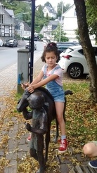
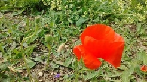
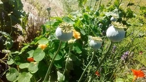

آیدا سوار بر اسب مجسمه. گرمش بود و حوصله نداشت. چهرهاش هم نشان میدهد.

شقایق. کاسبرگش حاوی مقدار قابل توجهی شیره سفید رنگ است از همان جنسی که برای تولید تریاک استفاده میشود. نزدیک خانهمان در ایران هم از این گلها زیاد بود. با همین شکل و اندازه. این را در بیراههای در میان آلمان دیدم.
اصل خشخاش را اما در باغچهای دیدم در مرکز دلفت. یک خیابان پر از اینها. خشخاشهای رسیده و آماده تیغ خوردن:
